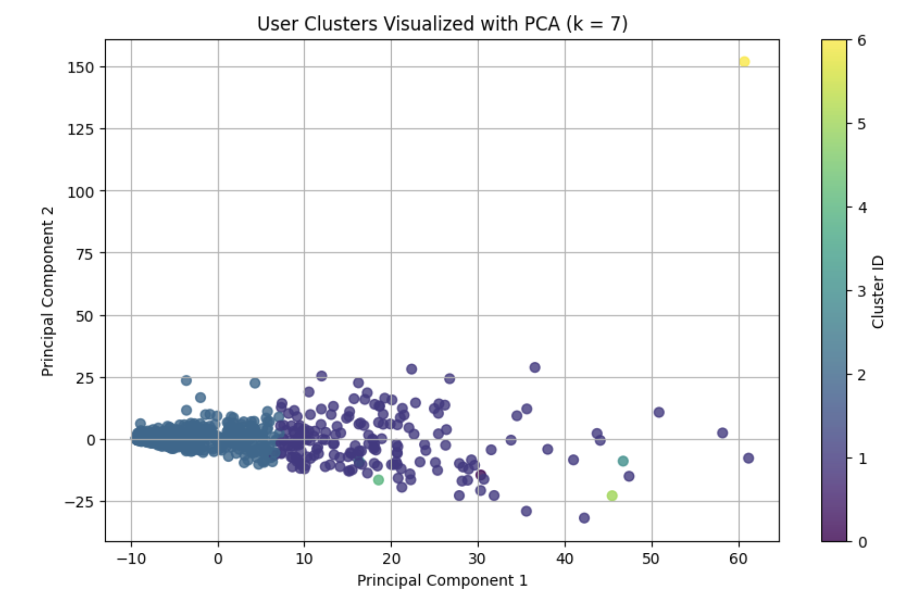

The MovieLens 100k dataset contains 100k movies rated between 1 and 5, where 5 is the highest rating. There are 943 unique users and 1,682 movies. The movies are rated between 1997 and 1998. The results of the
analysis can be found in the following workbook:
Recommendation System Workbook
Dataset Overview
Most of the ratings are a 3 or 4. Majority of the users leave multiple reviews, with each movie getting mutlple reviews. The top 10 most rated movies are: 50, 258, 100, 181, 294, 286, 288, 1, 300, and 121. Majority of the the reviews occur in November between 4pm and 11pm.
Data Analysis: User Clusters using K-Means Cluster
There are 7 user clusters. The elbow method was used to calculate the number of clusters. Below is a visualization of the seven clusters.

Recommendation Model Performance
The Root Mean Squared error which penalizes bigger error more using a quadratic equation is 0.93. This is a low number, so the error is low.